시작하기전 용어 정리
- 주소표시줄: 웹브라우저에서 url을 입력하는 영역
- 스크립트 : 웹브라우저가 읽을수 있는 프로그램 코드 자바스크립트를 의미합니다.
1. 자바스크립트 주소표시줄에서 실행
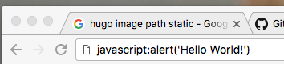
javascript:alert('Hello World!')
위의 코드를 주소표시줄에 직접 타이핑해보세요
(주소표시줄에 복사/붙여넣기하면 ‘javascript:’ 글자가 없어져서 제대로 동작을하지 않아요)
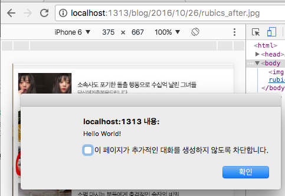
위의 이미지처럼 alert창이 나오면 스크립트 실행이 된 것입니다.
2. 자바스크립트 즐겨찾기 추가
웹브라우저가 제공하는 기능으로 즐겨찾기가 있습니다. 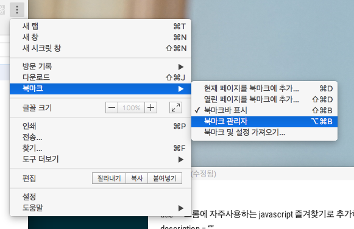
크롬의 우측에 있는 메뉴를 보면 북마크 관리자가 있습니다. 북마크 관리자를 클릭하면 아래의 화면이 보이실 겁니다.(단축키: 옵션 + 커맨드 + B)
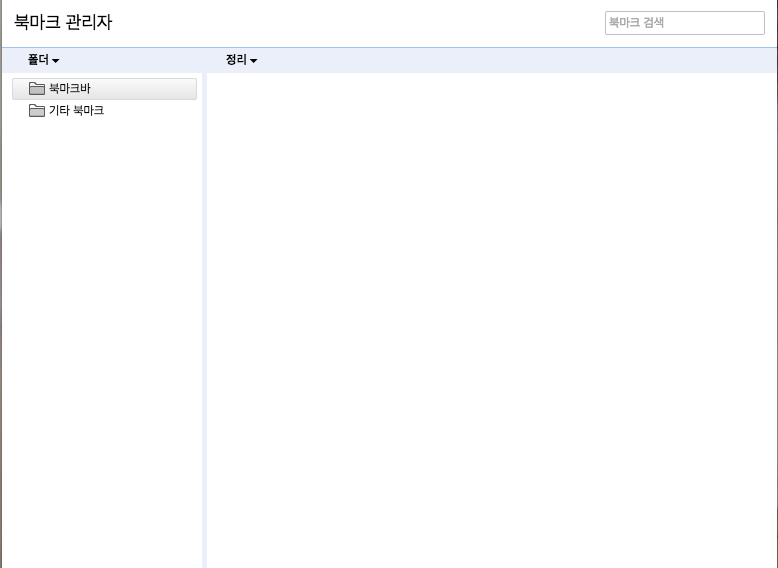
이 화면에서 우클릭을 하시면 아래의 메뉴가 나옵니다.
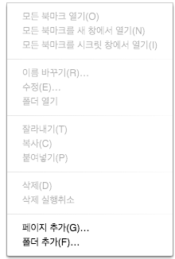
메뉴에서 페이지 추가를 누르시고
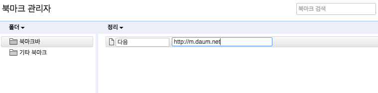
이미지와 같이 페이지를 추가해주세요
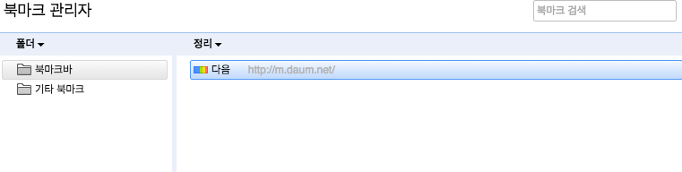
페이지가 즐겨찾기가 추가된 것을 보실수 있습니다.
추가된 즐겨찾기에서 더블클릭을하시면 새창으로 즐겨찾기된 페이지가 나오는 것을 보실수 있습니다. 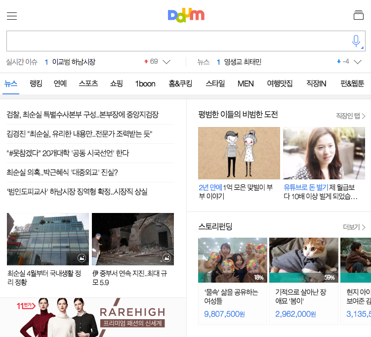
그럼 즐겨찾기에 자바스크립트를 추가해보겠습니다.
다시 북마크 관리자로 이동하신 후 아래의 이미지처럼 우클릭 후 폴더추가를 해주세요
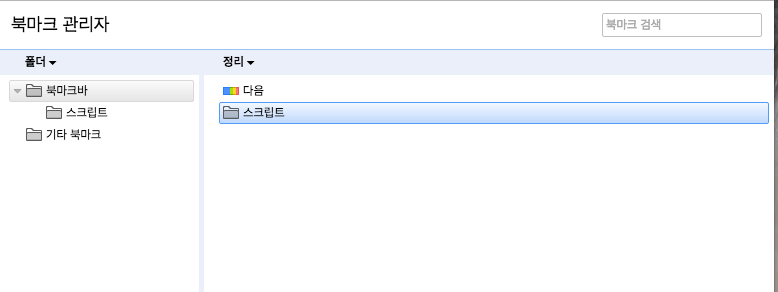

만들어진 즐겨찾기를 더블클릭해보면 새창이 열리면서 alert차이 나오는 것을 확인할 수 있습니다.
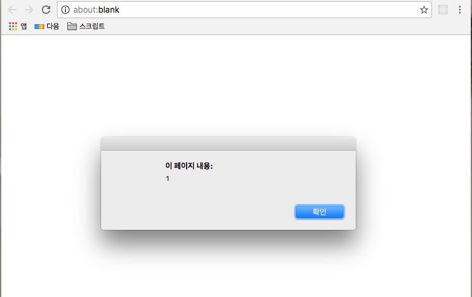
현시점까지는 스크립트가 북마크창에서만 실행시킬 수 밖에 없는 문제가 있습니다. 이것을 해결하는 방법은 북마크바 를 추가하는 것입니다.
3. 북마크바 추가
크롬 메뉴를 보시면 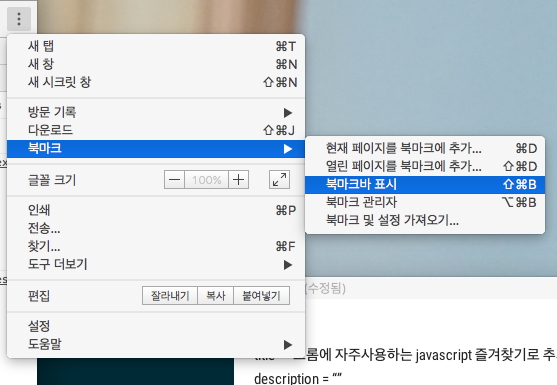
북마크바 표시를 클릭해보시면 주소표시줄에 아래의 이미지 처럼 북마크 바가 추가된 것을 확인할 수 있습니다.
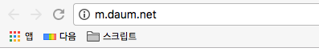

원하는 페이지에서 북마크된 스크립트를 실행해보면
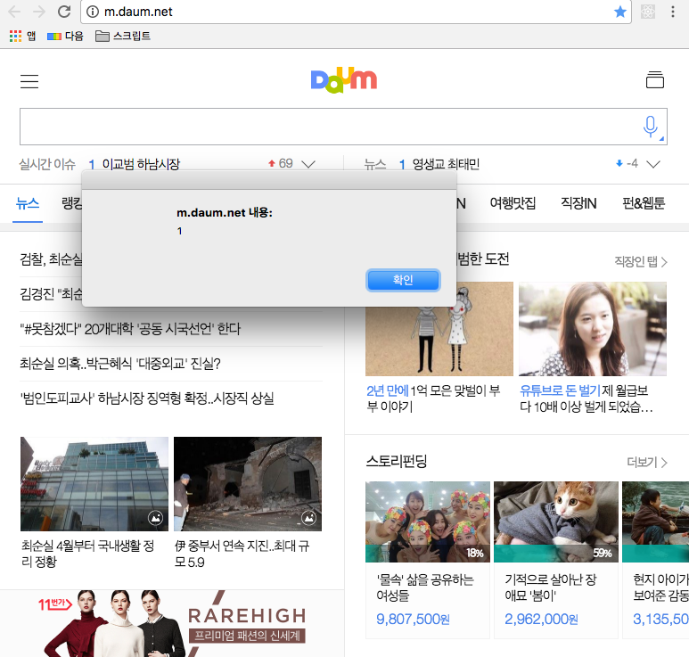
페이지에서 alert창이 나오는 것을 볼수 있습니다.
다음 포스트는 유용한 스크립트들 모음을 작성할 예정입니다.